청소년상담사-1급(1교시) (2019-10-05 기출문제)
1과목: 상담사 교육 및 사례지도
1. 코리 등(G. Corey et al.)이 제시한 수퍼바이저의 역할과 이에 관한 설명의 연결이 옳지 않은 것은?
- 교사 - 수퍼바이지가 특정 상담기법을 충분히 이해할 수 있도록 설명해준다.
- 상담자 - 수퍼바이지가 상담사례를 다루는 중에 겪게 되는 심리적 어려움을 조력한다.
- 평가자 - 수퍼바이지의 수행정도를 고려하여 실습학점을 부여한다.
- 중재자 - 수퍼바이지가 경험하는 스트레스를 함께 의논하고 스트레스에 대한 중재와 대처를 돕는다.
- 관리자 - 수퍼바이지가 상담하고 있는 사례들을 기관 방침에 따라 기록ㆍ관리를 잘 하고 있는지 확인한다.
(정답률: 알수없음)

2. 수퍼비전 작업동맹과 관련된 설명으로 옳지 않은 것은?
- 수퍼바이저는 수퍼비전 작업동맹과 상담 작업동맹을 동일시하지 않도록 주의해야 한다.
- 수퍼비전의 목표는 수퍼바이지와 내담자가 합의한 목표와 동일하다.
- 수퍼바이저는 수퍼바이지와 합의하여 수퍼비전의 목표를 설정한다.
- 수퍼바이저는 수퍼바이지와 각자 수행해야할 과업에 대해 서로 동의하고 공유한다.
- 수퍼바이저의 수퍼바이지에 대한 부적절한 평가는 정서적 유대감 형성을 방해할 수 있다.
(정답률: 67%)
3. 상담 수퍼비전에 관한 설명으로 옳은 것을 모두 고른 것은?
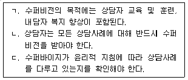
- ㄱ
- ㄱ, ㄴ
- ㄱ, ㄷ
- ㄴ, ㄷ
- ㄱ, ㄴ, ㄷ
(정답률: 60%)
4. 키치너(K. Kitchener)의 윤리적 의사결정 원칙 중 수퍼바이저가 위반한 사항을 순서대로 나열한 것은?
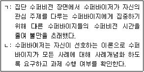
- ㄱ: 충실성(fidelity), ㄴ: 선의(beneficence)
- ㄱ: 충실성(fidelity), ㄴ: 무해성(nonmaleficence)
- ㄱ: 무해성(nonmaleficence), ㄴ: 자율성 존중(respect for autonomy)
- ㄱ: 공정성(justice), ㄴ: 선의(beneficence)
- ㄱ: 공정성(justice), ㄴ: 자율성 존중(respect for autonomy)
(정답률: 67%)
5. 다음 성찰일지에서 수퍼바이지가 수퍼비전 관계에 대해 인식하고 있는 어려움을 모두 고른 것은?
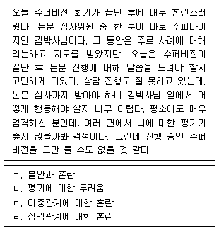
- ㄱ, ㄴ
- ㄴ, ㄹ
- ㄷ, ㄹ
- ㄱ, ㄴ, ㄷ
- ㄴ, ㄷ, ㄹ
(정답률: 60%)
6. 수퍼비전에서 사용하는 총괄(summative)평가와 형성(formative)평가에 관한 설명으로 옳지 않은 것은?
- 총괄평가는 수퍼바이지의 수행 정도에 구체적인 기준을 적용하여 최종평가를 하는 것이다.
- 총괄평가는 기말에 학점을 부여하는 방식 등으로 이루어진다.
- 형성평가의 일차적 목적은 수퍼바이지의 적격여부를 판정하는 것이다.
- 수퍼바이저의 피드백은 형성평가의 한 가지 형태이다.
- 형성평가는 수퍼비전 진행 중에 지속적으로 제공된다.
(정답률: 55%)
7. 자해를 시도하는 청소년 내담자의 사례를 지도할 때 수퍼바이지가 주목해야 할 위험신호를 모두 고른 것은?
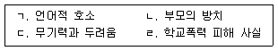
- ㄱ, ㄴ
- ㄷ, ㄹ
- ㄱ, ㄴ, ㄷ
- ㄱ, ㄴ, ㄹ
- ㄱ, ㄴ, ㄷ, ㄹ
(정답률: 60%)
8. 수퍼바이저 수련생 평가에 관한 설명으로 옳지 않은 것은?
- 수퍼바이저 수련생을 평가할 때 수련생의 사례개념화 지도 기술을 평가할 수 있다.
- 수퍼바이저 수련생의 자기평가를 독려하는 것은 수퍼바이저 수련생의 발달을 위한 것이다.
- 수퍼바이저 수련생을 평가과정에 참여시키는 것은 수퍼바이저의 부담을 줄이기 위한 것이다.
- 평가 자료로 수퍼바이저 수련생의 수퍼비전 회기 녹화자료를 활용할 수 있다.
- 수퍼바이저 수련생의 자기평가는 수퍼바이저 수련생의 자기효능감에 영향을 미친다.
(정답률: 알수없음)
9. 다음에 제시된 질문들이 공통적으로 의도하는 수퍼비전 개입은?
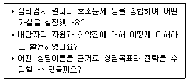
- 호소문제 이해여부 탐색
- 상담 사례개념화 조력
- 심리검사 활용 적절성 검토
- 상담목표 설정 적절성 검토
- 진단명 확정을 위한 평가전략 탐색
(정답률: 67%)
10. 고급(숙련된) 상담자에 대한 수퍼비전 개입에 관한 설명으로 옳은 것을 모두 고른 것은?
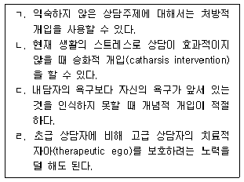
- ㄱ, ㄷ
- ㄴ, ㄹ
- ㄱ, ㄴ, ㄷ
- ㄱ, ㄴ, ㄹ
- ㄱ, ㄴ, ㄷ, ㄹ
(정답률: 알수없음)
11. 수퍼비전에서의 자기개방에 관한 설명으로 옳지 않은 것은?
- 수퍼바이저의 자기개방은 필요한 시점에 적절한 방법으로 해야 한다.
- 수퍼바이저의 자기개방은 수퍼바이저로서의 자신감을 얻는 것이 목적이다.
- 수퍼비전 작업동맹이 잘 형성된 경우 수퍼바이지의 자기개방이 비교적 쉽다.
- 수퍼비전 작업동맹이 잘 형성된 경우 수퍼바이지는 수치심, 두려움과 불안 등 부정적 감정을 쉽게 개방한다.
- 수퍼바이저가 지나치게 개인적인 이야기를 나누는 것은 경계를 혼란스럽게 할 수 있으므로 주의해야 한다.
(정답률: 알수없음)
12. 수퍼바이저 발달 이론에 관한 설명으로 옳지 않은 것은?
- 수퍼바이저의 발달적 특성을 단계로 구분하여 기술하는 경우가 많다.
- 수퍼바이지의 발달을 촉진하기 위해 다양한 개입을 할 수 있는 근거를 제공한다.
- 왓킨스(C. Watkins)는 수퍼바이저의 발달단계를 초급, 중급, 고급, 원로의 4단계로 구분한다.
- 헤스(A. Hess)는 수퍼바이저의 발달단계를 수퍼바이저 정체성의 초기, 탐색, 확립의 3단계로 구분한다.
- 스톨튼버그 등(C. Stoltenberg et al.)은 자신감과 안정감이 형성된 상태가 세 번째 단계에 해당한다고 하였다.
(정답률: 60%)
13. 다음 내용에 해당하는 수퍼비전의 이론적 접근은?
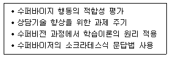
- 체계적 수퍼비전
- 게슈탈트 수퍼비전
- 구성주의적 수퍼비전
- 인지행동적 수퍼비전
- 수용전념적 수퍼비전
(정답률: 75%)
14. 집단 수퍼비전의 장점으로 옳지 않은 것은?
- 초보상담자는 경력이 많은 상담자를 관찰함으로써 학습한다.
- 상담수련생들이 다양한 피드백을 받을 수 있다.
- 다양한 사례에 대한 학습이 가능하다.
- 수련생 개개인에 따른 맞춤학습이 가능하다.
- 대리학습의 기회를 제공한다.
(정답률: 64%)
15. 체계적 수퍼비전 모델에서 수퍼바이저의 맥락적 요인에 해당하지 않는 것은?
- 전문가 경험
- 수퍼비전에서의 역할
- 상담의 이론적 경향성
- 상담관계
- 문화적 특성
(정답률: 알수없음)
16. 정신분석 수퍼비전의 초기단계에서 수퍼바이저가 점검해야 할 항목으로 옳지 않은 것은?
- 내담자의 역동을 이해했는가
- 문제해결을 위한 작업동맹을 형성했는가
- 상담의 목표와 전반적인 방향을 세웠는가
- 사례의 중단(dropout) 가능성을 사전에 검토했는가
- 내담자가 자신의 문제를 깊이 통찰할 수 있도록 이끌었는가
(정답률: 59%)
17. 수퍼바이지의 발달수준 평가 범주에 해당하는 것을 모두 고른 것은?
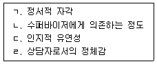
- ㄱ
- ㄱ, ㄴ
- ㄱ, ㄴ, ㄷ
- ㄴ, ㄷ, ㄹ
- ㄱ, ㄴ, ㄷ, ㄹ
(정답률: 70%)
18. 버나드(J. Bernard)와 굳이어(R. Goodyear)가 제시한 수퍼바이저의 윤리적 주제에 해당하지 않는 것은?
- 전문가의 정보
- 다중관계
- 전문적 유능성
- 비밀보장
- 사전동의
(정답률: 알수없음)
19. 수퍼바이저의 전문성에 관한 설명으로 옳지 않은 것은?
- 수퍼바이저는 자신의 자격요건을 수련생에게 분명히 밝혀야 한다.
- 대학원 과정에서뿐 아니라 계속교육을 통해서 전문성을 확장해야 한다.
- 수퍼바이저가 어떤 분야에 전문성이 부족할 때 계속적인 훈련을 받거나 다른 전문가에게 자문을 구한다.
- 수퍼바이저가 수퍼비전 보고서나 수퍼비전 기록지를 작성하고 보관할 필요가 없다.
- 이론학습, 교육, 실습 등의 경험을 통해 전문성을 향상한다.
(정답률: 64%)
20. 변별모델 수퍼비전에 관한 설명으로 옳지 않은 것은?
- 이 모델은 세 가지 초점과 세 가지 역할에 따라 아홉 가지 개입방향이 있다.
- 수퍼비전 회기 내에서 수퍼바이지의 요구에 따라 수퍼바이저의 개입기술을 바꿀 수 없다.
- 개입기술은 상담과정에서 수퍼바이지가 치료적 개입을 적절하게 사용하고 있는지에 초점을 둔다.
- 개념화기술은 내담자가 직면한 문제에 대한 개념화 능력과 문제에 대한 통합적인 이해능력을 의미한다.
- 개인화기술은 자신의 개인적인 특성을 상담과정에서 효과적으로 활용할 수 있는 능력을 말한다.
(정답률: 55%)
21. 내담자에게 초점을 둔 수퍼비전에 관한 설명으로 옳지 않은 것은?
- 수퍼바이지의 정서를 탐색하여 정서적 알아차림에 대한 이해를 돕는다.
- 사례보고서에서 나타난 상담과정과 개입전략에 초점을 맞춘다.
- 수퍼바이저가 수퍼바이지에게 내담자 보호를 강조하고 적절한 상담을 제공하는데 초점을 둔다.
- 수퍼바이지가 내담자에게 효과적인 상담을 제공하는지가 수퍼비전의 초점이 된다.
- 수퍼바이지가 준비한 축어록 등을 통해 내담자에 대한 사례개념화를 지도한다.
(정답률: 55%)
22. 홀로웨이(E. Holloway)의 체계적 접근 모델에서 제시한 수퍼비전의 기능에 해당되는 것을 모두 고른 것은?
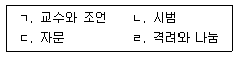
- ㄹ
- ㄱ, ㄴ
- ㄱ, ㄷ
- ㄱ, ㄴ, ㄷ
- ㄱ, ㄴ, ㄷ, ㄹ
(정답률: 60%)
23. 수퍼바이저가 상담수련생에게 지도하고자 하는 상담기법은?
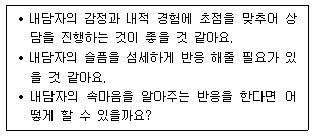
- 공감
- 직면
- 해석
- 재진술
- 즉시성
(정답률: 알수없음)
24. 고급(숙련된) 상담자의 발달적 특징에 관한 설명으로 옳은 것은?
- 자신과 타인에 대한 알아차림이 부족하다.
- 가이드라인이 제공되는 구조화된 수퍼비전을 선호한다.
- 수퍼바이저에게 많이 의존하며 자율성이 낮다.
- 구체적인 상담 진행 기술을 수퍼바이저에게 배우고자 한다.
- 다양한 상담 전략에 대한 장점과 제한점을 알고 있다.
(정답률: 알수없음)
25. 수퍼비전과 자문에 관한 설명으로 옳은 것은?
- 수퍼비전은 상담수련생과 내담자의 개인차에 따라 내용이 달라진다.
- 자문은 위계적 관계에서 이루어진다.
- 수퍼비전은 일회적일 때 효과적이다.
- 자문은 평가적 요소가 강하다.
- 자문은 내담자를 통찰시킨다.
(정답률: 60%)
2과목: 청소년 관련 법과 행정
26. 기관의 종사자가 그 직무를 수행하면서 청소년 근로자에 대한 최저임금법, 근로기준법 등 노동 관계법령 위반 사실을 알게 된 경우, 청소년 기본법상 근로감독관에게 의무적으로 신고해야 할 기관에 해당되지 않는 것은?
- 한국청소년수련시설협회
- 아동복지시설
- 이주배경청소년지원센터
- 학교 밖 청소년 지원센터
- 한국청소년상담복지개발원
(정답률: 42%)
27. 청소년 기본법의 내용으로 옳지 않은 것은?
- 청소년육성의 모든 영역에서 청소년의 기본인권은 존중되어야 한다.
- 청소년육성에 관하여 다른 법률에 우선시 하여 적용된다.
- 청소년의 자치권 확대를 명시하고 있다.
- 청소년육성의 1차적 책임이 사회에 있다.
- 국가와 지자체는 청소년육성에 필요한 법적ㆍ제도적 장치를 마련하여야 한다.
(정답률: 알수없음)
28. ( )에 들어갈 내용으로 옳은 것은?
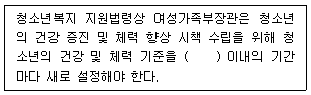
- 5년
- 7년
- 8년
- 9년
- 10년
(정답률: 70%)
29. 학교 밖 청소년 지원에 관한 법령에 근거하여 3년 마다 실시되는 학교 밖 청소년 실태조사의 내용을 모두 고른 것은?
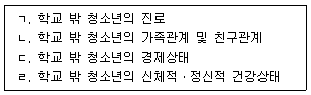
- ㄱ, ㄴ, ㄷ
- ㄱ, ㄴ, ㄹ
- ㄱ, ㄷ, ㄹ
- ㄴ, ㄷ, ㄹ
- ㄱ, ㄴ, ㄷ, ㄹ
(정답률: 알수없음)
30. 학교폭력예방 및 대책에 관한 법령상 학교폭력대책자치위원회가 학교장에게 요청할 수 있는 가해학생 조치사항으로 옳지 않은 것은?
- 전학 요청
- 사회봉사 요청
- 가해학생에 대한 수사 요청
- 피해학생에 대한 서면사과 요청
- 학내외 전문가에 의한 특별 교육이수 또는 심리치료 요청
(정답률: 60%)
31. ( )에 들어갈 청소년 연령을 옳게 나열한 것은?
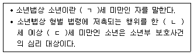
- ㄱ: 18, ㄴ: 9, ㄷ: 14
- ㄱ: 18, ㄴ: 9, ㄷ: 15
- ㄱ: 19, ㄴ: 9, ㄷ: 14
- ㄱ: 19, ㄴ: 10, ㄷ: 14
- ㄱ: 19, ㄴ: 10, ㄷ: 15
(정답률: 알수없음)
32. 청소년복지 지원법상 청소년복지시설이 아닌 것은?
- 청소년쉼터
- 청소년 보호ㆍ재활센터
- 청소년회복지원시설
- 청소년치료재활센터
- 청소년자립지원관
(정답률: 60%)
33. 「아동ㆍ청소년의 성보호에 관한 법률」 위반 시 처벌에 관한 조항으로 옳은 것은?
- 폭행 또는 협박으로 아동ㆍ청소년을 강간한 사람은 무기징역 또는 10년 이상의 유기징역에 처한다.
- 아동ㆍ청소년이용음란물을 제작ㆍ수입 또는 수출한 자는 무기징역 또는 7년 이상의 유기징역에 처한다.
- 아동ㆍ청소년의 성을 사는 행위를 한 자는 1년 이상 10년 이하의 징역 또는 3천만원 이상 5천만원 이하의 벌금에 처한다.
- 아동ㆍ청소년의 성을 사기 위하여 아동ㆍ청소년을 유인하거나 성을 팔도록 권유한 자는 3년 이하의 징역 또는 1천만원 이하의 벌금에 처한다.
- 아동ㆍ청소년에 대한 강간죄에 대해 디엔에이(DNA) 증거 등을 통해 그 죄를 증명할 수 있을 경우 공소시효는 10년 연장된다.
(정답률: 알수없음)
34. 학교폭력예방 및 대책에 관한 법령상 내용으로 옳은 것은?
- 학교폭력대책위원회는 교육부 소속으로 둔다.
- 학교폭력대책지역위원회는 시ㆍ군ㆍ구 단위에 둔다.
- 학교폭력대책지역위원회 위원으로 시ㆍ군ㆍ구 의회 의원이 위촉된다.
- 교육감은 필요한 경우 학교폭력 가해학생의 학부모를 조사할 수 있다.
- 학교장은 가해학생에 대한 선도가 긴급하여 출석정지 등과 같은 조치를 취할 경우 학교폭력대책자치위원회의 사전승인을 받아야 한다.
(정답률: 알수없음)
35. 청소년복지 지원법령상 지역사회 청소년통합지원체계 운영위원회의 심의사항을 모두 고른 것은?
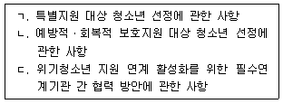
- ㄱ
- ㄱ, ㄴ
- ㄱ, ㄷ
- ㄴ, ㄷ
- ㄱ, ㄴ, ㄷ
(정답률: 64%)
36. 제정 근거가 청소년 기본법으로 명시된 법을 모두 고른 것은?
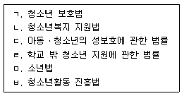
- ㄱ, ㄷ, ㄹ
- ㄴ, ㄹ, ㅂ
- ㄴ, ㅁ, ㅂ
- ㄱ, ㄴ, ㄷ, ㅁ
- ㄱ, ㄴ, ㄹ, ㅂ
(정답률: 알수없음)
37. 국립중앙청소년디딤센터에 관한 내용으로 옳지 않은 것은?
- 2012년에 개원한 거주형 치유기관이다.
- 입교대상자 연령은 만 13 ～ 18세 청소년이다.
- 입ㆍ퇴교판정위원회가 심사를 통해 입교 여부를 최종 결정한다.
- 입교대상자는 ADHD, 우울증, 불안장애, 품행장애 등 정서적ㆍ행동적 장애를 가진 청소년이다.
- 입교청소년을 위한 종합적ㆍ전문적인 치유 서비스를 원스톱으로 제공한다.
(정답률: 알수없음)
38. 청소년 기본법령상 청소년특별회의에 관한 내용으로 옳지 않은 것은?
- 매년 지역회의 개최 후 전국 단위의 회의를 개최한다.
- 여성가족부장관은 특별회의 의제 선정 및 연구 등을 위하여 관계 공무원 또는 관계 전문가에게 협조를 요청할 수 있다.
- 여성가족부장관은 선정된 의제를 해당 연도 최종회의 개최 15일 전까지 관계 행정기관의 장에게 알려야 한다.
- 청소년 관련 기관ㆍ단체에서 추천하는 청소년과 청소년분야의 전문가가 같이 참여한다.
- 여성가족부장관은 특별회의 의제와 관련된 중앙행정기관의 장 등이 회의에 참석하도록 협조를 요청할 수 있다.
(정답률: 알수없음)
39. ( )에 들어갈 내용으로 옳은 것은?
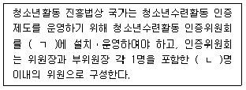
- ㄱ: 국무총리실, ㄴ: 15
- ㄱ: 여성가족부, ㄴ: 10
- ㄱ: 여성가족부, ㄴ: 20
- ㄱ: 한국청소년활동진흥원, ㄴ: 15
- ㄱ: 한국청소년활동진흥원, ㄴ: 20
(정답률: 60%)
40. 청소년 기본법의 내용으로 옳은 것은?
- 청소년상담사 연수 실시기관의 장은 연수기간ㆍ장소ㆍ방법ㆍ평가기준과 연수에 필요한 사항을 연수 실시 30일 이전에 공고해야 한다.
- 청소년정책에 관한 주요 사항을 심의ㆍ조정하기 위해 여성가족부에 청소년대책위원회를 둔다.
- 청소년육성 전담공무원은 청소년상담사 또는 사회복지사의 자격을 가진 사람으로 한다.
- 청소년단체는 청소년육성과 관련한 수익사업을 할 수 없다.
- 한국청소년수련시설협회는 청소년육성기금을 관리ㆍ운용할 수 있다.
(정답률: 59%)
41. 청소년 보호법상 청소년보호위원회에 관한 내용으로 옳지 않은 것은?
- 청소년유해매체물, 유해약물, 유해업소 등의 심의ㆍ결정 등에 관한 사항을 심의한다.
- 청소년 시설ㆍ단체 및 각급 교육기관 등에서 청소년 관련 업무를 10년 이상 담당한 사람은 위원이 될 수 있다.
- 위원의 임기는 2년으로 하며, 연임할 수 없고, 당연직 위원의 임기는 그 재임기간으로 한다.
- 회의는 재적위원 과반수의 출석으로 개의하고, 출석위원 과반수의 찬성으로 의결한다.
- 위원장은 청소년 관련 경험과 식견이 풍부한 사람 중 여성가족부장관의 제청으로 대통령이 임명한다.
(정답률: 알수없음)
42. 청소년수련활동인증제에 관한 내용으로 옳지 않은 것은?
- 인증심사원은 2년마다 20시간 이상의 직무연수를 이수하여야 한다.
- 활동 유형은 기본형, 이동형, 숙박형, 학교단체숙박형이다.
- 인증활동 결과를 해당 인증수련활동이 끝난 후 15일 이내에 인증위원회에 통보하여야 한다.
- 수련활동의 인증을 받으려는 자는 참가자 모집 또는 활동 시작 30일 이전에 인증위원회에 인증을 요청하여야 한다.
- 인증수련활동에 참여한 청소년의 활동기록을 확인하는 등의 절차를 거쳐 해당 활동이 끝난 후 20일 경과한 날부터 그 기록을 제공할 수 있도록 해야 한다.
(정답률: 알수없음)
43. ( )에 들어갈 내용은?
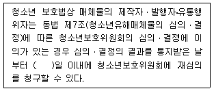
- 30
- 35
- 40
- 45
- 50
(정답률: 알수없음)
44. 청소년 보호법령상 청소년 보호에 관한 내용으로 옳은 것은?
- 여성가족부장관은 청소년유해환경으로부터 청소년을 보호하고 치료와 재활을 지원하기 위해 청소년 비행예방센터를 설치ㆍ운영해야 한다.
- 인터넷게임 제공자는 17세 미만의 청소년에게 오전 0시부터 오전 6시까지 인터넷게임을 제공해서는 안 된다.
- 초ㆍ중ㆍ고교의 방학기간에는 오전 8시부터 오후 10시까지 청소년유해매체물이 방송되어서는 안 된다.
- 여성가족부장관은 문화체육관광부장관과 협의하여 심야시간대 인터넷게임 제공시간, 제한대상, 게임물의 범위가 적절한지를 2년마다 평가하여 개선 등의 조치를 해야 한다.
- 보건복지부장관은 인터넷게임 중독 등 매체물의 오ㆍ남용으로 신체적ㆍ정신적 피해를 입은 청소년에 대해 반드시 예방과 상담 등의 서비스를 제공해야 한다.
(정답률: 알수없음)
45. 청소년 보호법상 청소년보호종합대책 수립ㆍ시행과 관련한 내용으로 옳지 않은 것은?
- 여성가족부장관은 종합대책 수립 및 점검회의 운영을 위해 필요한 자료를 관계 기관의 장에게 요청할 수 있다.
- 여성가족부장관은 종합대책의 효과적 수립ㆍ시행을 위해 청소년의 유해환경접촉실태 조사를 정기적으로 실시해야 한다.
- 여성가족부장관은 종합대책의 추진상황을 매년 점검해야 하고, 이를 위해 관계 기관 점검회의를 운영할 수 있다.
- 종합대책의 수립ㆍ시행과 점검회의의 운영 등에 필요한 사항은 대통령령으로 정한다.
- 여성가족부장관은 5년마다 관계 중앙행정기관의 장과 협의하여 청소년보호종합대책을 수립ㆍ시행한다.
(정답률: 알수없음)
46. 현재 여성가족부에서 위기 청소년 사회안전망 구축을 위한 종합대책의 수립ㆍ조정을 담당하는 부서는?
- 청소년자립지원과
- 청소년정책과
- 청소년활동안전과
- 청소년보호환경과
- 학교밖청소년지원과
(정답률: 알수없음)
47. 학교 밖 청소년 지원에 관한 법령상 학교장이 학교 밖 청소년이 된 학생을 지원센터에 연계할 경우 제공할 수 있는 개인정보의 내용이 아닌 것은?
- 학교 밖 청소년의 성명
- 학교 밖 청소년의 가족관계
- 학교 밖 청소년의 주소
- 학교 밖 청소년의 연락처
- 학교 밖 청소년의 생년월일
(정답률: 알수없음)
48. 청소년복지 지원법령상 명시된 청소년상담복지센터의 기능에 해당되지 않는 것은?
- 상담 자원봉사자에 대한 교육 및 연수
- 청소년 상담 또는 긴급구조를 위한 전화 운영
- 청소년의 자립능력 향상을 위한 자활 및 재활 지원
- 청소년육성에 필요한 정보 등의 종합적 관리 및 제공
- 폭력ㆍ학대로 인한 피해 청소년의 긴급구조 및 일시보호 지원
(정답률: 55%)
49. 소년법상 소년부판사의 심리결과에 근거하여 내릴 수 있는 보호처분의 내용에 해당되지 않는 것은?
- 수강명령
- 불기소처분
- 사회봉사명령
- 장기 소년원 송치
- 보호관찰관의 단기 보호관찰
(정답률: 알수없음)
50. 청소년활동 진흥법령상 인증을 받아야 하는 청소년수련활동이 아닌 것은?
- 청소년 참가인원: 150명 이상인 청소년수련활동
- 항공활동: 패러글라이딩, 행글라이딩
- 장거리 걷기활동: 8Km 도보이동
- 산악활동: 4시간 이상의 야간등산
- 수상활동: 모터보트, 수중스쿠터
(정답률: 알수없음)
3과목: 상담연구방법론의 실제
51. 명목척도로 조사된 변수들 간의 관계에 관한 통계분석에서 적합한 분석방법은?
- F검정
- Z검정
- t검정
- X2검정
- U검정
(정답률: 알수없음)
52. 표본크기와 표집오차에 관한 설명으로 옳은 것은?
- 표본크기와 표집오차는 관련이 없다.
- 전수조사를 하면 표집오차가 커진다.
- 표본크기가 1,000 이상이면 표집오차는 0으로 간주한다.
- 표본크기가 커지면 표집오차는 커진다.
- 표집오차는 표본크기를 결정하는 요인 중 하나이다.
(정답률: 알수없음)
53. 연역적 접근법과 귀납적 접근법에 관한 설명으로 옳은 것을 모두 고른 것은?
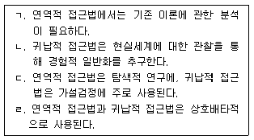
- ㄱ, ㄴ
- ㄱ, ㄷ
- ㄱ, ㄹ
- ㄴ, ㄷ
- ㄴ, ㄹ
(정답률: 알수없음)
54. 내적 타당도를 저해하는 요인을 모두 고른 것은?
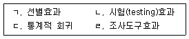
- ㄱ, ㄴ, ㄷ
- ㄱ, ㄴ, ㄹ
- ㄱ, ㄷ, ㄹ
- ㄴ, ㄷ, ㄹ
- ㄱ, ㄴ, ㄷ, ㄹ
(정답률: 알수없음)
55. 상담학 연구방법 중 삼각측량법(triangulation)에 관한 설명으로 옳지 않은 것은?
- 삼각측량법은 동일한 현상을 탐구함에 있어 다양한 방법을 동원하여 판단의 정확성을 점검하는 기법이다.
- 삼각측량법은 동일한 현상을 여러 시각에서 점검하게 할 뿐 아니라, 숨어있는 차원을 드러나게 하여 이해의 수준을 심화시키는 역할을 한다.
- 삼각측량법은 질적 연구방법뿐 아니라 양적 연구방법까지 포괄하는 연구방법이다.
- 삼각측량법은 상담의 이론과 방법 모두에 적용될 수 있다.
- 집단간방법 삼각측량법은 동일 현상을 측정하는 척도들의 내적 일관성이나 신뢰성을 따지는 것이다.
(정답률: 알수없음)
56. 두 변수가 서열척도로 측정된 경우 사용되는 상관계수는?
- 적률(product moment)상관계수
- 양분(biserial)상관계수
- 양류(point-biserial)상관계수
- 등위(rank order)상관계수
- 사분(tetrachoric)상관계수
(정답률: 알수없음)
57. 통계적 가설검정 시 유의수준을 0.01 대신 0.⑤로 설정하였을 때, 옳은 것은?
- 1종 오류의 위험이 증가한다.
- 2종 오류의 위험이 증가한다.
- 1종 오류, 2종 오류 모두의 위험이 증가한다.
- 1종 오류, 2종 오류 모두의 위험이 감소한다.
- 1종 오류, 2종 오류의 위험에 변화가 없다.
(정답률: 알수없음)
58. 다음 사례에 해당하는 표집방법은?
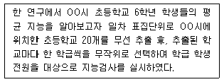
- 단순무작위표집법
- 층화표집법
- 군집표집법
- 할당표집법
- 우연표집법
(정답률: 알수없음)
59. 다음 사례에서 나타난 오류는?
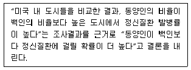
- 단원적 인과론의 오류
- 생태학적 오류
- 개체주의적 오류
- 일반화 오류
- 환원주의적 오류
(정답률: 알수없음)
60. 다음 ( )에 들어갈 용어로 옳은 것은?
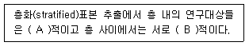
- A: 동질, B: 이질
- A: 이질, B: 동질
- A: 동질, B: 동질
- A: 이질, B: 이질
- A: 독립, B: 종속
(정답률: 알수없음)
61. 측정오차와 관련된 내용으로 옳은 것을 모두 고른 것은?
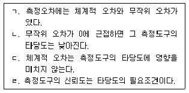
- ㄱ, ㄴ
- ㄱ, ㄷ
- ㄱ, ㄹ
- ㄴ, ㄷ
- ㄴ, ㄹ
(정답률: 알수없음)
62. 조사연구 설계 단계를 순서대로 나열한 것은?
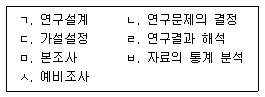
- ㄴ - ㄱ - ㄷ - ㄹ - ㅂ - ㅅ - ㅁ
- ㄴ - ㄷ - ㄱ - ㅅ - ㅁ - ㅂ - ㄹ
- ㄴ - ㄷ - ㄹ - ㄱ - ㅂ - ㅅ - ㅁ
- ㄷ - ㄴ - ㄱ - ㅅ - ㅁ - ㅂ - ㄹ
- ㄷ - ㄴ - ㄹ - ㄱ - ㅂ - ㅁ - ㅅ
(정답률: 알수없음)
63. 새로 개발된 우울장애 진단도구의 공존타당도(concurrent validity)를 평가하는 방법으로 옳은 것은?
- 새로운 도구를 사용하여 1년 동안 진단한 사람의 수와 기존에 널리 사용하던 도구를 사용하여 1년 동안 진단한 사람의 수를 비교한다.
- 동일한 집단을 대상으로 새로운 도구로 진단한 결과와 널리 사용하는 기존 도구의 진단 결과를 비교한다.
- 일정기간 동안 새로운 도구를 사용하여 반복적으로 측정한 개인별 진단이 얼마나 일관성이 있는지를 측정한다.
- 우울장애 전문가들에게 새로 개발한 도구에 대한 설명서를 제공하고 그들의 의견을 묻는다.
- 새로운 도구의 문항을 반으로 나누어 반분한 도구의 결과 간 일치도를 비교한다.
(정답률: 알수없음)
64. 학습상담의 효과성을 살펴보는 실험연구에서 실험집단의 사례수가 5명, 시험의 평균점수가 90(표준편차 2), 비교집단의 사례수가 6명, 시험의 평균점수가 80(표준편차 3.6)으로 나타났다. 통합표준편차를 활용하여 효과크기를 계산한 값은? (단, 소표본으로 인한 보정은 없고, 계산값은 반올림하여 소수 첫째자리까지 구한다.)
- -5.0
- -3.3
- 3.3
- 5.0
- 7.7
(정답률: 30%)
65. 다음 사례에서 나타난 단일사례설계 유형은?
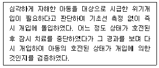
- AB설계
- ABA설계
- BAB설계
- ABAB설계
- 다중기초선설계
(정답률: 30%)
66. 종단자료 유형화 분석을 통해 청소년들이 생애주기 만성형 비행집단, 청소년기 한정형 비행집단, 무(無)비행집단으로 구분되었다. 무비행집단과 대비하여 각 비행집단에 소속될 확률을 통계적으로 유의하게 높이는 독립변수들을 확인하는데 활용되는 분석방법은?
- 카이제곱분석
- 요인분석
- 잠재계층분석
- 군집분석
- 다항로지스틱 회귀분석
(정답률: 40%)
67. 종단자료를 분석하는 방법으로 옳은 것을 모두 고른 것은?
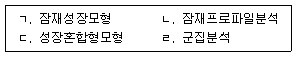
- ㄱ, ㄴ
- ㄱ, ㄷ
- ㄴ, ㄹ
- ㄱ, ㄴ, ㄷ
- ㄱ, ㄴ, ㄹ
(정답률: 60%)
68. 질적 연구방법에서 질적 자료분석 소프트웨어의 사용에 관한 내용으로 옳지 않은 것은?
- 방대한 양의 자료를 체계적으로 관리할 수 있다.
- 분석 과정에서 언제든지 원자료를 쉽게 파악하는데 도움이 된다.
- 질적 연구의 신뢰성과 타당성을 자동적으로 높일 수 있다.
- 코드나 주제들과 관련된 텍스트나 이미지를 조직하는데 도움이 된다.
- 현상학적 연구에서도 활용할 수 있다.
(정답률: 55%)
69. 상담기법 효과, 상담자 효과, 상담장소 효과가 우울 감소에 영향이 있는지를 확인하는 고정효과 삼원 분산분석에서 가능한 F검정의 최대 횟수는?
- 3
- 4
- 5
- 6
- 7
(정답률: 알수없음)
70. 실험집단, 통제집단, 위약집단 간의 분산분석에서 등분산성을 검증하는 Levene's test 결과가 통계적으로 유의하게 나타났다면, 차후 연구의 후속조치로 옳은 것은?
- 실험집단의 사례수를 줄여야 한다.
- 독립변수의 신뢰도를 높여야 한다.
- 통제변수를 늘려야 한다.
- 집단간 동질성을 확보해야 한다.
- 양측검정보다 단측검정을 사용해야 한다.
(정답률: 알수없음)
71. 다음 연구제목만으로 알 수 없는 것은?
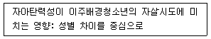
- 독립변수
- 종속변수
- 매개변수
- 조절변수
- 분석단위
(정답률: 알수없음)
72. 다른 모든 조건이 동일하다는 전제에서 옳은 내용을 모두 고른 것은?
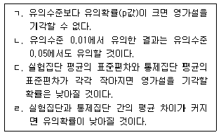
- ㄱ, ㄴ
- ㄷ, ㄹ
- ㄱ, ㄴ, ㄷ
- ㄱ, ㄴ, ㄹ
- ㄴ, ㄷ, ㄹ
(정답률: 알수없음)
73. 무응답과 그 처리방법에 관한 내용으로 옳지 않은 것은?
- 무응답이 무작위로 발생했는지 확인하여야 한다.
- 마할라노비스 거리(Mahalanobis distance)의 제곱을 확인하여야 한다.
- 종단자료에서 무응답은 항목(item)무응답과 단위(unit)무응답으로 구분할 수 있다.
- 무응답이 있는 경우, 사례에서 제거하거나 다른 응답치로 대체할 수 있다.
- 무응답을 여러 응답치로 대체하는 방법도 있다.
(정답률: 알수없음)
74. 전체가 125명인 어떤 변수를 빈도분석한 결과이다. 이를 기반으로 평균, 중앙값, 분산을 구한 값들의 합은?
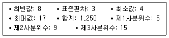
- 17
- 28
- 31
- 38
- 43
(정답률: 알수없음)
75. 연구윤리에 관한 내용으로 옳지 않은 것은?
- 자발적 참여와 고지에 입각한 동의는 과학적 연구의 조건과 배치될 수 있다.
- 어느 정도의 고통이 윤리적으로 수용될 수 있는지에 대한 적절한 사회적 합의가 필요하다.
- 연구윤리심의위원회(IRB)의 심사는 소속대학에서만 이루어져야 하는 것은 아니다.
- 연구참여자의 익명성과 비밀을 보장하지 못하는 경우도 있을 수 있다.
- 비과학적 연구는 연구윤리와 관계가 없다.
(정답률: 알수없음)
수퍼바이저의 역할은 교사, 상담자, 평가자, 중재자, 관리자로 구분되며, 이 중에서 중재자의 역할은 수퍼바이저가 경험하는 스트레스를 함께 의논하고 스트레스에 대한 중재와 대처를 돕는 것이다. 따라서, "중재자"와 "스트레스에 대한 중재와 대처를 돕는다"가 연결되어야 한다.
반면에 "교사"와 "특정 상담기법을 충분히 이해할 수 있도록 설명해준다"는 연결이 옳지 않다. 수퍼바이저는 교사에게 상담기법을 가르치는 것이 아니라, 교사가 상담기법을 충분히 이해하고 적용할 수 있도록 지원하는 역할을 한다.